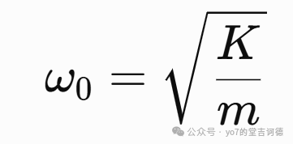
这说明弹簧越硬，系统响应越快，质量越大，系统响应越慢。在机械波中也类似，介质中产生局部形变以后，弹性力试图恢复原来的状态，而惯性抵抗运动状态的改变。波速的结构也类似
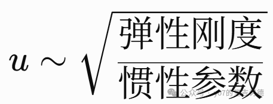
这跟介质的性质息息相关，对于连续介质，我们有如下常见的量来描述，这里我们先只考虑一维情况，就是只需要E
我们先从从特殊一维长细杆的受力开始，力是改变运动状态的一个原因，研究在介质中的运动，就先从力开始，在小变形、线弹性范围内，单轴应力与应变满足胡克定律
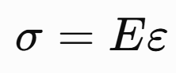
纵向位移是一个关于x，t的二元函数，因此应力可以写成（这里ζ是纵向位移）
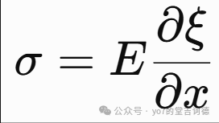
应力取决于位移的空间变化率，但仍然是关于x，t的函数，沿轴向的合力为，s为截面面积
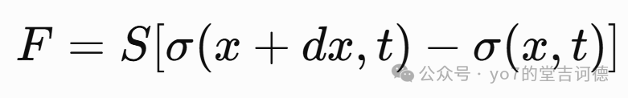
dx很小时
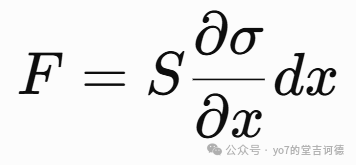
由牛顿第二定律并带入胡克定律（ρ是密度）
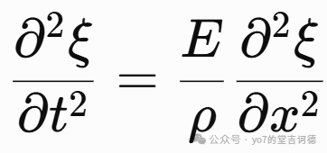
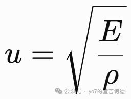
当然它只是细长杆中的一维纵向波近似，但我们如果换成三维固体，那情况其实是有点复杂的，因为三维固体不仅能够被拉伸、压缩，还能够发生剪切变形。而不同的变形对应不同的弹性恢复力。（这里的分析有点复杂，好多都还没看懂，先放一放，留个坑 ）
）
在现实中波动方程其实不一定都是cos，sin这样的，因此我们需要从微分的角度去讲这个波动的结构找出来
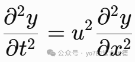
这个波动方程的微分形式当然更根本，比方说
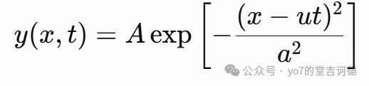
这样一个脉冲方程就也满足波动方程
一般的波是一个在时空中平移的函数形状，这个函数是任意的
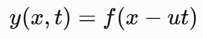
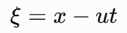
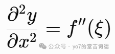
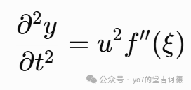
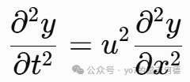
这就说明了在理想均匀、线性、无色散的介质中，任何足够光滑的初始波形，都可以以速度 u 保持形状向右传播。
当然对于任意行波，就是右波叠加左波（给他一个名字就是这是达朗贝尔通解）
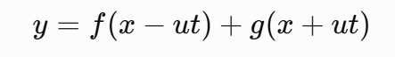
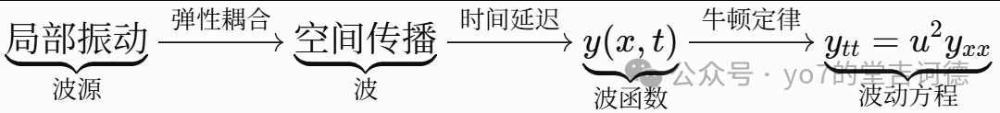
二。概率论
我们知道当随机变量的值是连续的时候，在某点处的概率是零，因此我们研究的是在某个区间上的概率，由此引入概率密度函数
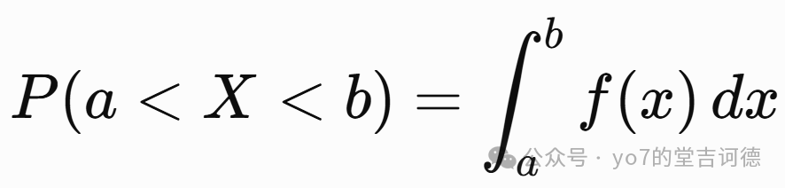
不同的随机{机制】对应着不同的随机分布
最简单的就是概率密度函数是个常数，就是均匀分布
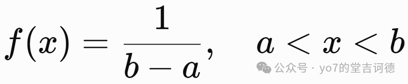
但很多现实中的随机现象并不是均匀的。例如在恒定事件发生率等相应假设下，我们定义随机变量为首次出现这个随机现象的时间，等待得越久，需要满足的（之前一直没有发生」这个条件就越苛刻。随机事件的等待时间往往更容易取较小值，于是自然引出指数分布。定义
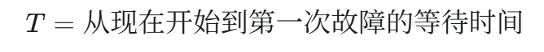
设设备单位时间的瞬时故障率恒定为lambda，那么
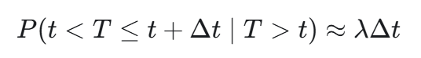
于是定义
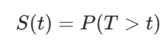
设备正常运行到t+Δt时，要保证前 t小时没有故障，并且接下来 Δt小时也没有故障，
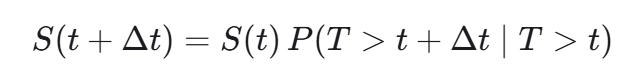
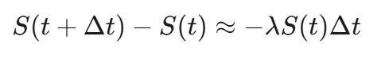
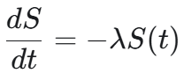
解得
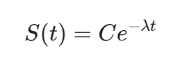
这个跟泊松分布其实是一个过程，同样也具有无记忆性，但我们如果假设一个随机事件具有无记忆性，我们来看一下能推导到什么
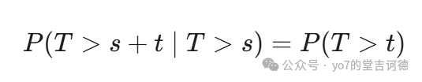
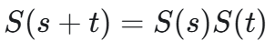
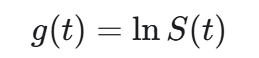
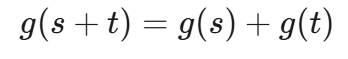
其实也能推出指数与无记忆性的强相关联
同样的推广到第n个故障产生的时间的概率，就是γ分布了，定义
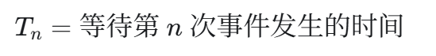
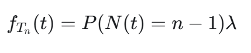
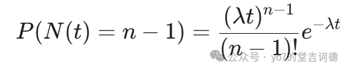
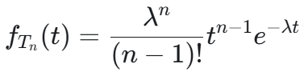
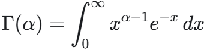
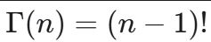
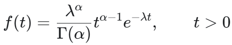
我们又发现大形状参数的 Gamma 分布经过标准化后，会越来越接近同一个结构的分布，这就引导出标准正态分布
这个大参数的理解其实可以理解为扰动很大，就是多种因素影响着随机变量，就如果一个随机变量由大量微小随机因素共同影响，他会呈现出怎样的分布，设就是我们假设这些微小随机因素遵循着指数分布（比较简洁又贴近现实）
那我们从结构开始入手，我们在上面大形状参数的 Gamma 分布经过标准化后发现的一个特殊结构有着
1.大部分测量值集中在某个中心附近
2.偏离中心越远，出现得越少
3.向左偏离和向右偏离的规律近似对称
首先需要一个中心μ，同时的对称结构
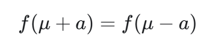
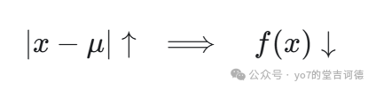
同时我们观测到的是大量满足适当条件的独立微小随机因素相加，经过标准化后，其分布会趋近正态分布。并且由于最大熵原理，在所有具有相同均值和方差的连续型分布中，正态分布具有最大的微分熵。也就是说，当只知道均值和方差时，它是一种不额外施加分布形状信息的选择。
这个的推导还是需要需要思考一下的（这里给出推导思路）
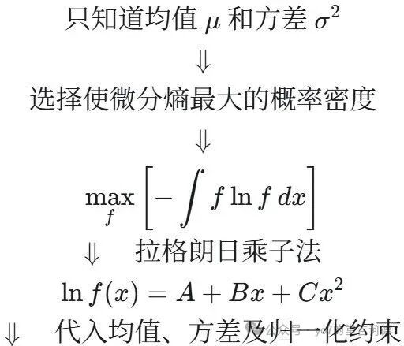
所以我们采用
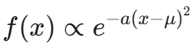
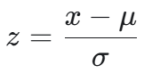
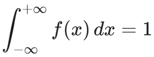
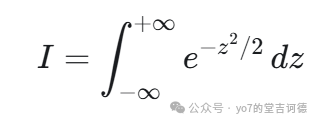
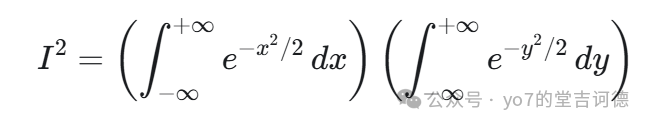
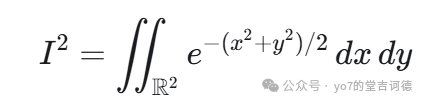
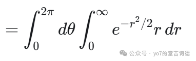
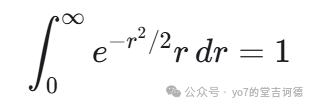
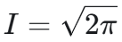
于是乎求出了系数
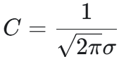
当然比方说某些器件的失效风险可能随着使用时间增加。指数函数中的lambda是一个随时间变化的量，或者我们研究如何根据数据更新对未知参数的认识，这就变成Weibull 分布和β分布，这个之后再讨论
这样我们从随机现象出发就可以逐步建立概率辅助决策的思考了
三。
篮球赛打一号位，练一下指挥（去年王正廷杯朱哥练剩下的战术），嗓子喊得有点哑了，往里造杀伤遇到直接拿膝盖顶我腿，大腿有点痛啊
但也是赢了吧，虽然战术跑得一坨